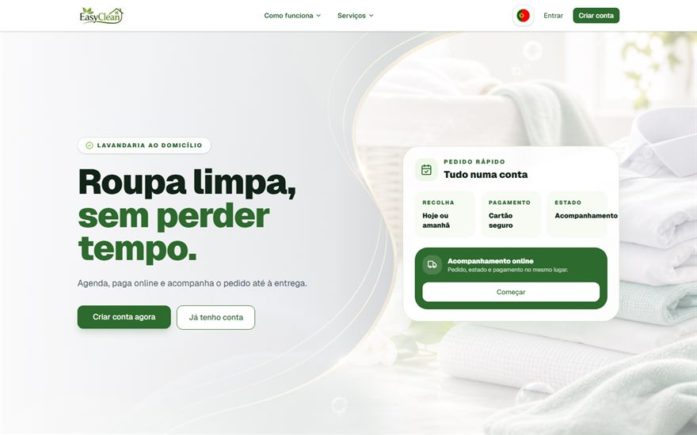

Projetos / Easy Clean Luxembourg
Easy Clean Luxembourg
Plataforma de lavandaria ao domicílio com área de cliente, painel administrativo, pagamentos e cinco idiomas.

Resumo
O que é este projeto?
Uma plataforma completa para uma lavandaria ao domicílio a operar no Luxemburgo. Reúne num só produto a página que capta o cliente, a área onde ele faz e acompanha os pedidos, a subscrição recorrente e o painel onde a equipa gere o serviço.
Problema
Qual o problema que precisava ser resolvido?
Os pedidos entravam por telefone, um a um, sem registo estruturado. O cliente não tinha forma de saber em que estado estava a sua roupa, e não existia mecanismo para cobrar de forma recorrente em vez de a cada recolha.
Havia ainda uma exigência do mercado: o Luxemburgo é um país onde se atende em várias línguas, e um site apenas em francês ou inglês deixa clientes de fora.
Solução
Como o sistema resolve esse problema?
O pedido passa a nascer online. O cliente cria conta, agenda a recolha, paga com cartão e acompanha o estado até à entrega — tudo no mesmo sítio, sem telefonema.
Para a lavandaria, cada pedido deixa de ser uma nota e passa a ser um registo na base de dados, visível no painel de administração com o seu estado e histórico. A subscrição resolve a cobrança recorrente sem intervenção manual.
Toda a interface existe em cinco idiomas — português, inglês, francês, alemão e espanhol — com seletor no próprio site.
Meu papel
O que eu desenvolvi?
Único desenvolvedor do projeto. Os 69 commits do repositório são meus, e cobrem todas as camadas: desenho dos ecrãs, aplicação Next.js, schema da base de dados, autenticação, ligação ao Stripe, envio de emails e publicação em produção.
Principais funcionalidades
- Landing page responsiva, com tema próprio e chamada clara para criar conta.
- Páginas de serviço que explicam o cuidado aplicado a cada tipo de tecido.
- Área de cliente com pedidos, histórico, acompanhamento do estado, perfil e subscrição.
- Painel administrativo com dashboard e gestão da lista de pedidos.
- Autenticação com contas próprias e login social.
- Pagamentos e subscrições através do Stripe.
- Emails transacionais automáticos.
- Cinco idiomas com seletor: PT, EN, FR, DE e ES.
- Formulário de contacto e chamada direta para WhatsApp.
Resultado
A plataforma está publicada em Cloudflare Workers, com a aplicação Next.js adaptada para correr no ambiente de edge através do OpenNext, e base de dados D1 com o schema gerido por Drizzle ORM.
O repositório é público: o código pode ser lido por inteiro, incluindo o modelo de dados e a integração de pagamentos.